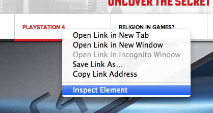
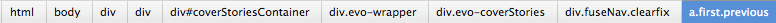
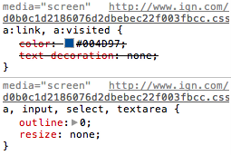
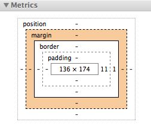
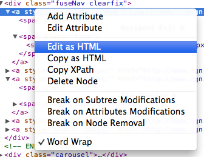
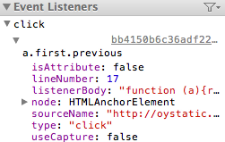

Code Foo
Code Foo
Debugging Javascript and CSS
Overview
- Intro to the Chrome developer tools
- Inspecting Elements
- Javascript Debugging with Chrome
- Debugging with Internet Explorer
Intro to the Chrome developer tools
View > Developer > Developer Tools
Dock or Undock
Options
Inspecting Elements
Navigating the DOM
Debugging and Editing CSS
The Box Model
Editing HTML
Event Listeners
Javascript Debugging with Chrome
Debugging with Internet Explorer
Resources
JSFiddleChrome Developer Tools Documentation
IE Developer Toolbar
Firebug